Matplotlib
Table of contents
*Matplotlib: 기초적인 데이터 시각화 library
→ 서브모듈 matplotlib.pyplot으로 다양한 그래프를 직접 그려볼 수 있다
plt.plot(): 선 그리기
import matplotlib.pyplot as plt ## 보통 pyplot만 별도로 plt로 줄여서 import
%matplotlib inline ## jupyter notebook에서 시각화 결과가 표시되도록 하는 설정
- 직접 점을 찍어서 선 그리기
plt.plot([1,2,3,4,5,6,7,8,9,8,7,6,5,4,3,2,1]) # x값은 자동으로 0, 1, 2, ..., 16으로 그려짐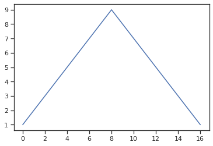
- x값, y값을 가지고 선 그리기
import numpy as np x = np.arange(0, 12, 0.01) # 0에서 12까지 0.01 간격으로 데이터를 만듦 y = np.sin(x) # x의 sin값 (사인함수) plt.figure(figsize=(6,4)) # figsize로 얼마나 크게 그래프를 그릴 지 지정 가능 plt.plot(x, y)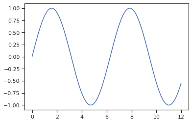
- grid, label, title 추가
plt.plot(x, y) plt.grid() # 격자무늬 생성 plt.xlabel('time') # x축 라벨 plt.ylabel('Amplitude') # y축 라벨 plt.title('Example of sinewave'); # 제목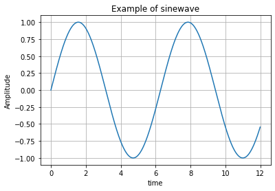
- 한 화면에 그래프 두 개 그리기
## plot 메소드를 2번 써서 한 화면에 그래프를 두 개 그리기 plt.plot(x, np.sin(x), label='sin') ## plt.legend()를 하려면 label을 붙여줘야 한다 plt.plot(x, np.cos(x), label='cos') plt.grid() # 격자무늬 생성 plt.legend() # legend(범례) 생성 plt.xlabel('time') # x축 라벨 plt.ylabel('Amplitude') # y축 라벨 plt.title('Example of sinewave'); # 제목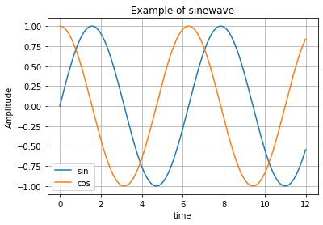
- 선 굵기, 색상 조정
plt.plot(x, np.sin(x), linewidth=3) # linewidth (혹은 lw): 선 굵기를 조정 plt.plot(x, np.cos(x), color='r') # color (혹은 c): 색을 조정 ('r'은 red로 하겠다는 뜻) plt.grid() # 격자무늬 생성 plt.xlabel('time') # x축 라벨 plt.ylabel('Amplitude') # y축 라벨 plt.title('Example of sinewave'); # 제목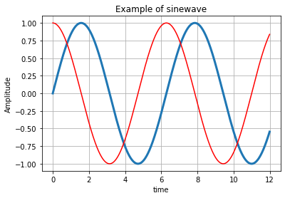
- 선 스타일 조정
x = [0, 1, 2, 3, 4, 5, 6] y = [1, 4, 5, 8, 9, 5, 3] plt.plot(x, y, color='green', linestyle='dashed'); # 선 스타일을 점선으로 지정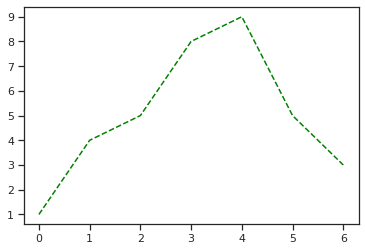
- marker 생성
- marker 종류는
'o', '.', 'v', '^', '<', '>', '1', 's'등… 다양 - 다양한 스타일은 https://matplotlib.org/3.1.1/api/_as_gen/matplotlib.pyplot.plot.html 참조
plt.plot(x, y, color='green', linestyle='dashed', marker='*', # 별 모양 마커 markerfacecolor='blue', markersize=12); # markerfacecolor로 마커 색 지정, markersize로 마커의 크기 지정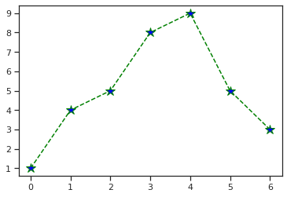
- marker 종류는
plt.scatter(): 점 찍기
- 기본 scatter plot
x = np.array([0, 1, 2, 3, 4, 5, 6, 7, 8, 9]) y = np.array([9, 8, 7, 9, 8, 3, 2, 4, 3, 4]) plt.scatter(x, y)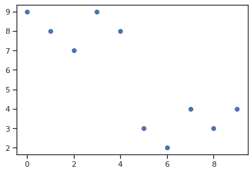
- colormap 옵션 지정
plt.scatter(x, y, s = 50, c = x, marker='>') # c = x라고 하면 x값에 따라 색상을 바꾸는 colormap으로 표현하겠다는 뜻. # marker로 마커의 모양을 지정, s로 마커 크기를 지정 plt.colorbar(); # 오른쪽에 colorbar 표시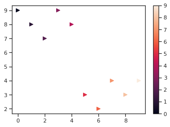
data labeling
plt.annotate()
import pandas as pd
score_df = pd.read_excel('data/math_reading_scores.xlsx')
score_df
| Name | Math | Reading | |
|---|---|---|---|
| 0 | Annie | 75 | 95 |
| 1 | Bella | 78 | 85 |
| 2 | Chloe | 98 | 75 |
| 3 | Diana | 65 | 65 |
| 4 | Emily | 78 | 75 |
| 5 | George | 84 | 85 |
| 6 | Serene | 82 | 95 |
| 7 | Jakob | 95 | 85 |
| 8 | Kim | 75 | 75 |
→ 각 점에 ‘Name’ 라벨 붙이기
plt.figure(figsize=(9, 6)) # 그래프 크기 결정
x = score_df['Math']
y = score_df['Reading']
plt.scatter(x = x, y = y)
# 제목, x축 이름, y축 이름 붙이기
plt.title('<Score>', pad=20, size=20)
plt.xlabel('Math', size=16)
plt.ylabel('Reading', size=16)
# 각 점에 label 붙여주기: annotate() 메소드 사용
for i in range(len(score_df)):
label = score_df['Name'][i]
plt.annotate(label, xy=(x[i],y[i]), xytext=(x[i]+0.3,y[i]+0.3), fontsize=10)
## xy는 (x,y)로 라벨이 붙을 점을 알려주는 역할
## xytext는 text가 어느 위치에 들어갈지를 결정하는 역할. (x[i]+0.3,y[i]+0.3)는 각 (x,y) 점에서 0.3씩 떨어진 곳에 글을 쓰겠다는 뜻
plt.grid() # 격자무늬 만들기
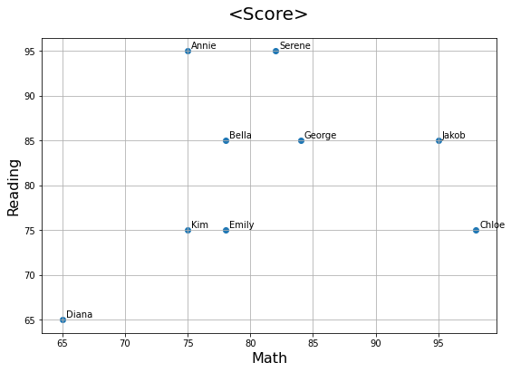
cf) pandas.plot()에 plt.annotate를 조합해서 아래와 같이 표현하는 것도 가능
score_df.plot(kind='scatter', x='Math', y='Reading', figsize=(9, 6), grid=True)
# x축, y축 이름도 자동으로 붙음
x = score_df['Math']
y = score_df['Reading']
for i in range(len(score_df)):
list1 = score_df.loc[i].values.tolist()
label = score_df['Name'][i]
plt.annotate(label, xy=(x[i],y[i]), xytext=(x[i]+0.3,y[i]+0.3), fontsize=10)
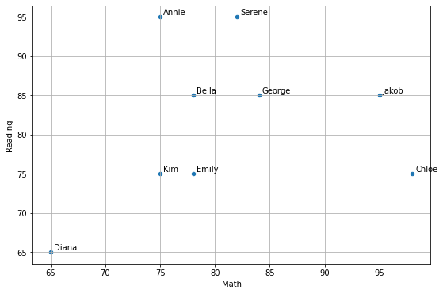
plt.text()
- annotate와 거의 동일하게 표현 가능
plt.figure(figsize=(9, 6))
x = score_df['Math']
y = score_df['Reading']
plt.scatter(x = x, y = y)
# 제목, x축 이름, y축 이름 붙이기
plt.title('<Score>', pad=20, size=20)
plt.xlabel('Math', size=16)
plt.ylabel('Reading', size=16)
# 각 점에 이름 붙여주기: plt.text() 메소드 사용
for i in range(len(score_df)):
plt.text(score_df['Math'][i]*1.01, score_df['Reading'][i], score_df['Name'][i], fontsize=10)
## plt.text(x값, y값, label붙일 값) 이렇게 값을 assign.
## score_df['Math'][i]*1.01이라고 한 건 조금 오른쪽로 떨어져서 label이 보이도록 한 것.
plt.grid()
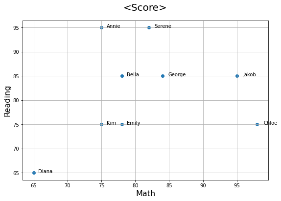